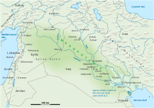
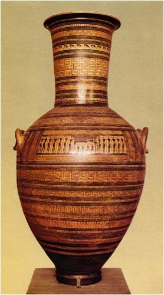
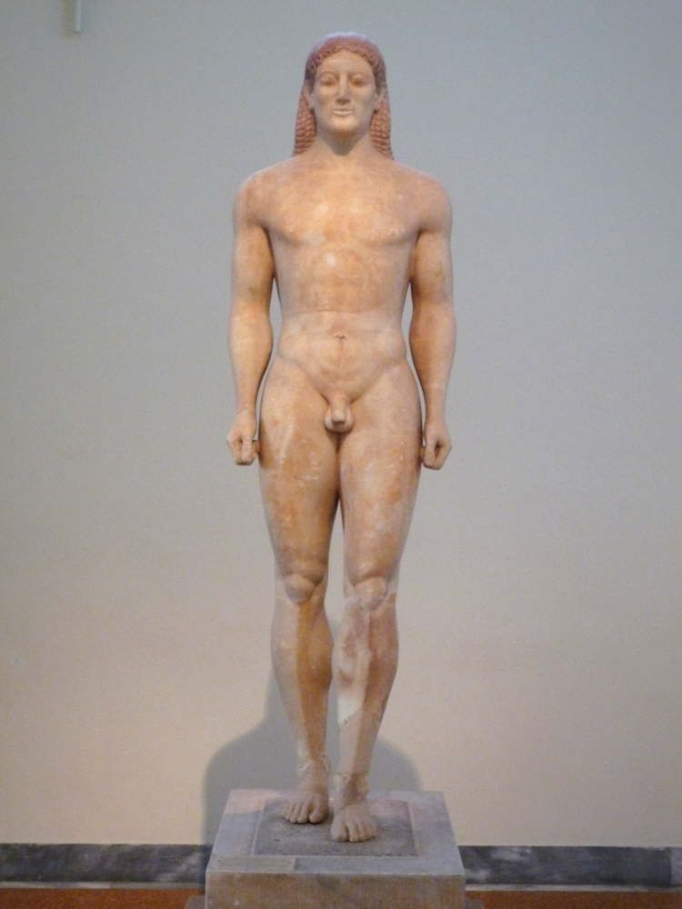
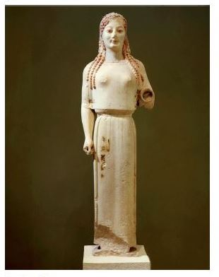
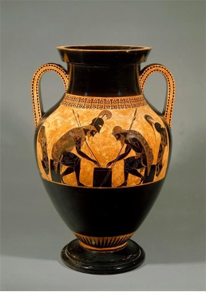
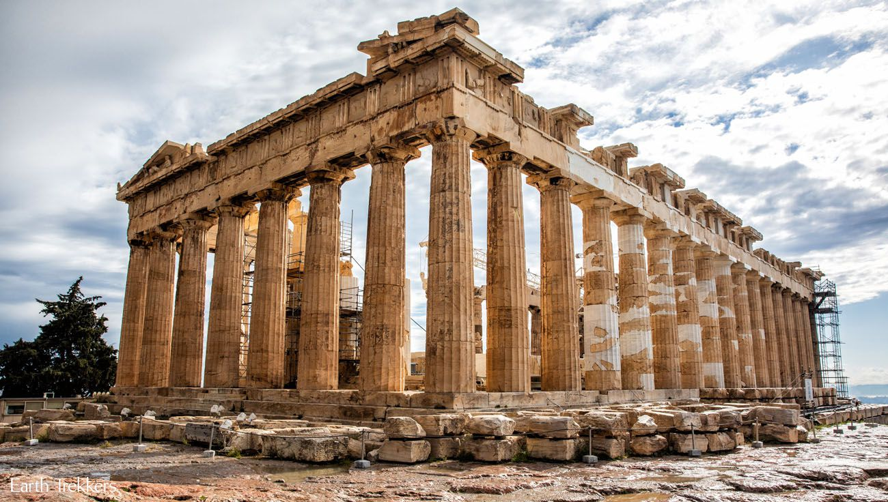

Greece
Greece consist of 1400 islands in the Mediterranean Sea. The land has lots of mountains as well as lakes, rivers, forest, volcanoes, canyons, and caves. The highest mountain is Mount Olympus, with an altitude of 2917 meters. The land provides resources such as, petroleum, magnetite, lignite, bauxite, hydropower, and marble. Since Greece is surrounded by a sea the Greeks fished a lot. They also sailed to other countries to trade goods.
The Greeks believed in Gods, specifically the Olympian Gods. These gods all represented something. Zeus is the leader of the Olympian gods. He is the god of the sky. Zeus became leader after he wins the battle of the gods and Titians. His father, Kronos, was a titian, so Zeus defeated his father to come to power. His father needed to be defeated because he had eaten his children. Kronos’s wife, Rhea, hid Zeus from Krono’s until he was old enough to save his siblings and destroy his father. Kronos also defeated his father, Uranus. He did this by cutting off Uranus’s testicles, thus taking away his power. The Greeks associated manhood with power. Uranus testicles were thrown into the sea. They then became Aphrodite.
Athenian Democracy consisted of Archons, Council of Areopagus, Boule, Eliaia, and an Ecctesia. The Archons were 9 wealthy men. They were elected every year. One of these men was the leader, which was called Basileus. Another man was in charge of the army, that role was called a Polemarch. Six men were law makers and called Themothetai. The other man was called a Eponymous and he determined the name of the year. After serving as an Archon you would be a part of the Council of Areopagus. There you served for life and supervised and interpreted the constitution and laws. They were the main judicial, religion, and politicians. Next is the Ecctesia, this was an assembly of all the male citizens. Later, in 594 BC a man named Solon instigated the Boule and Eliaia. The Boule had 400 members and were 2 of the highest classes. The Eliaia has 6,000 members who were citizens of Greece. The rotated being the jury for Athens. The jury has 500 members.
The Greeks are famous for their Olympic games. The games took place on the site dedicated to Zeus because the games were played to honor Zeus. The sacred site was called Olympia. The name of the games, Olympics, derived from the name of the site. The games took place every four years. They started the Olympics in 776 BC and stopped in 393 BC. Women were not allowed to participate and to even watch. Some of the games were races, wrestling, boxing, javelin, and jumping into a soft pit while holding weights.
Artwork
Dipylon Amphora Vase:
The Diplyon Amphora Vase was made in the geometric period around 750 BC. It is five feet and 3 inches tall. The geometric style is seen in the geometric shapes and the repeating of animals in a line. This vase would have been placed on a grave. The image on the vase is of a funeral. You can tell it is a funeral because of the figure lying down and the figures bellow are pulling on their hair. The figure is a female because of the curves on the body. The vase is black figure. This means that the vase was covered in a black liquid. The figures and design were added by scraping away some of the black to show the red of the pot underneath.
Anavysos Kouros:
The Anavysos Kouros is a marble statue of a man. It was made in the Archaic period in 530 BC. The figure is more realistic that the sculptures made 70 years ago. The figure’s smile is called the Archaic smile. It looks like a slight smile. Like the Dipylon Amphora Vase, the Anavysos Kouros is a grave marker.
Peplos Kore:
The Peplos Kore is a statue of a woman. It was made in the Archaic period in 530 BC. It was found on in the Pantheon. The woman could be either Athena or Artemis. It could be Athena because it was found in her acropolis. Artemis is the goddess of animals, and there are animals on the skirt making it possible that the woman is her.
Ajax and Achilles Playing Dice:
The Ajax and Achilles Playing Dice is by Exehias. The vase was made in the Archaic period. Exehias was a Greek potter, who mainly did black figure pottery including the Ajax and Achilles Playing Dice. Like the name of the vase, the focus on the vase is Ajax and Achilles playing a game of dice. There is alignment shown on the vase. The spears align with the vases handles, and the shields align with the other side of the handle.
The Parthenon:
The Parthenon is the acropolis of Athens. It was made in the classical period in 447 BC. The ruler at the time, Pericles, was the one who decided to make it. He built it with Athens tax money. It was built for the goddess Athena. It was also the symbol of the birthplace of democracy. The columns are the Doric style. This is seen on the top of the columns; they are plain rectangles. The building has no right angles in order for it to look organic. The floor is not flat and the columns cave in slightly.